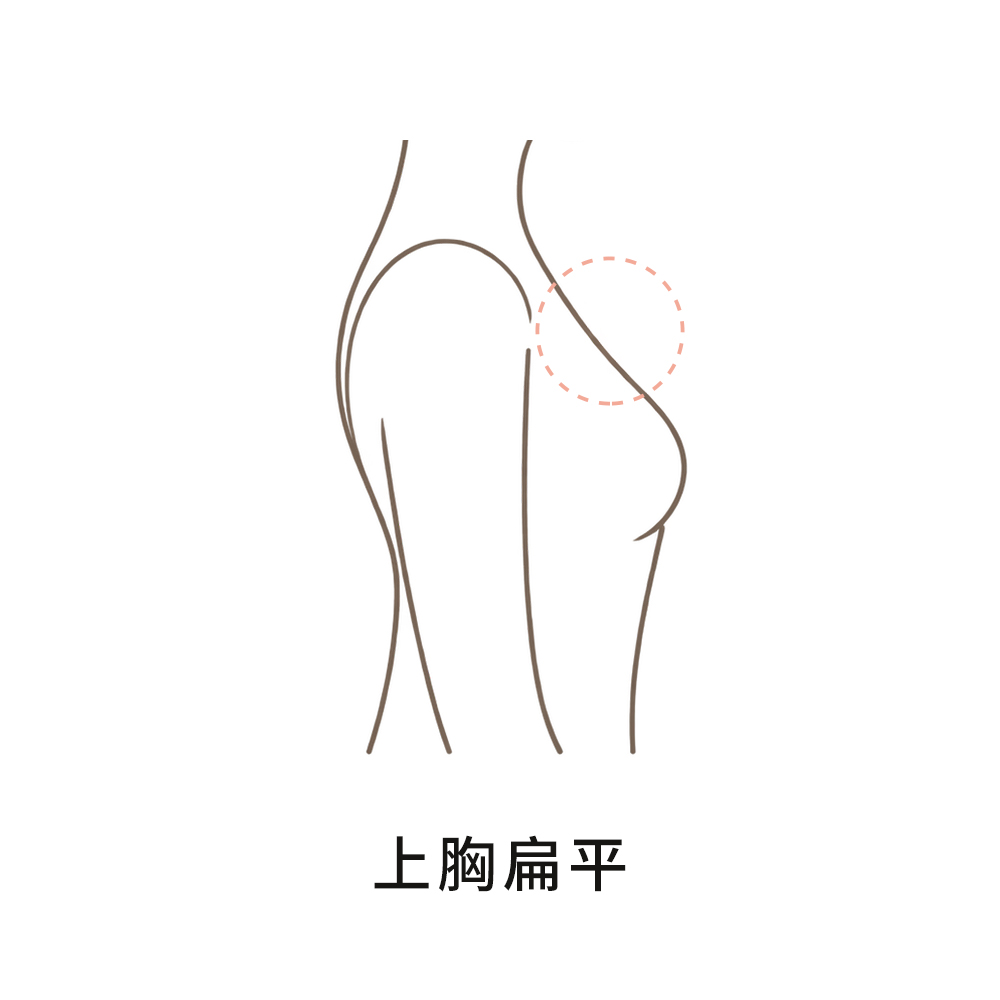
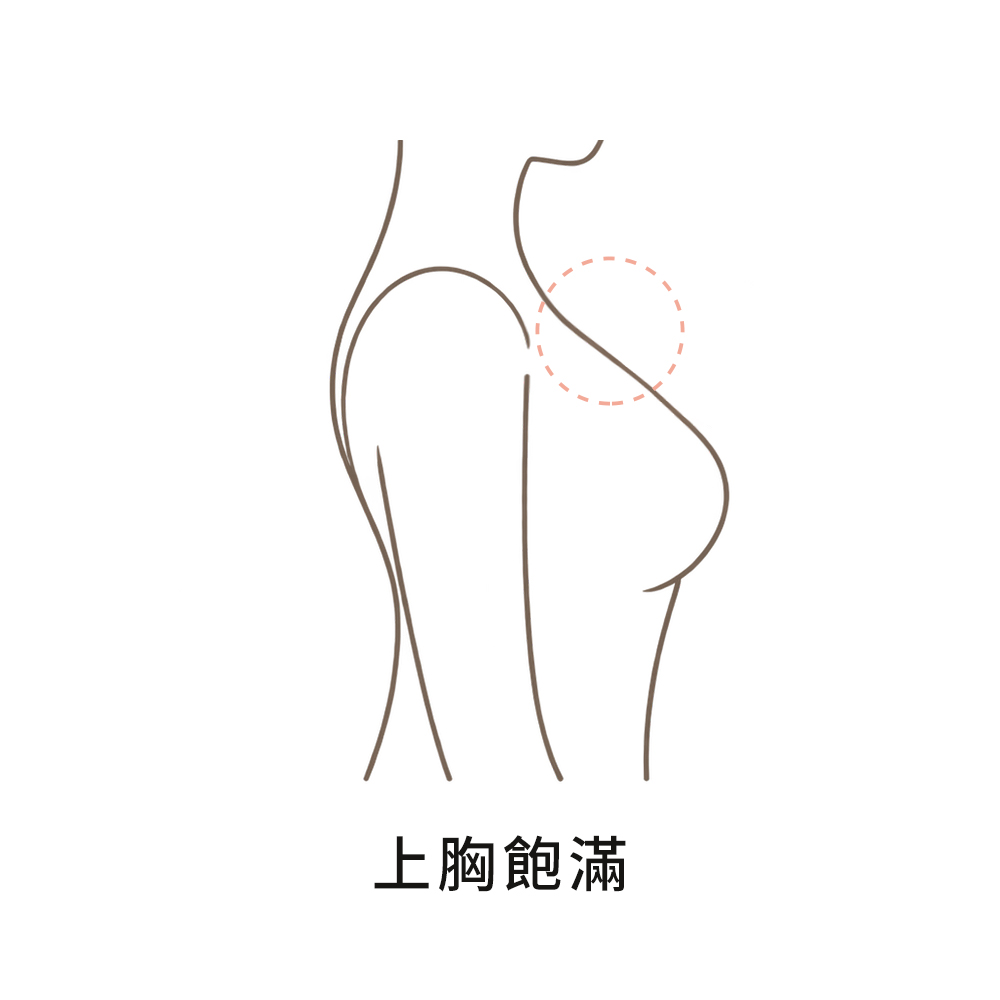
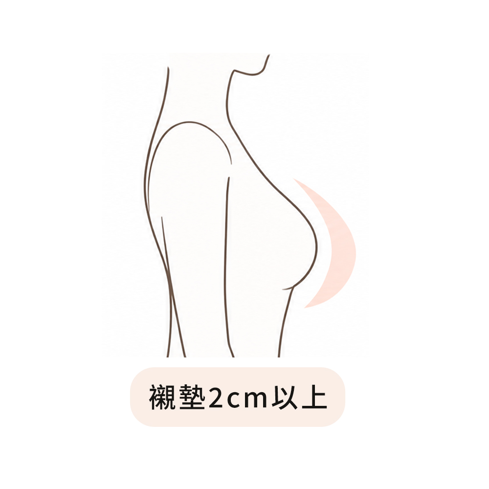
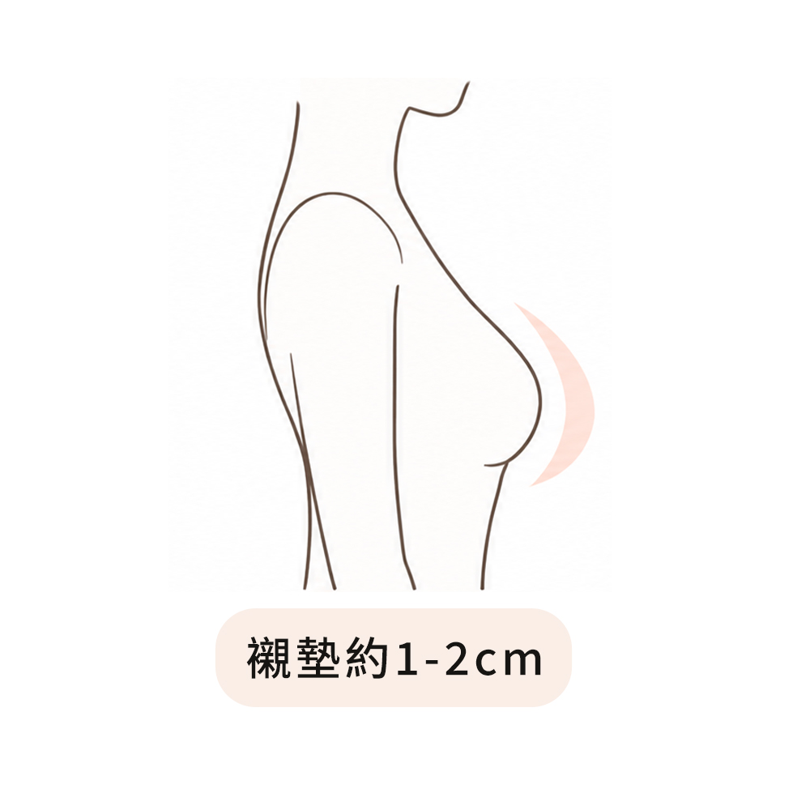
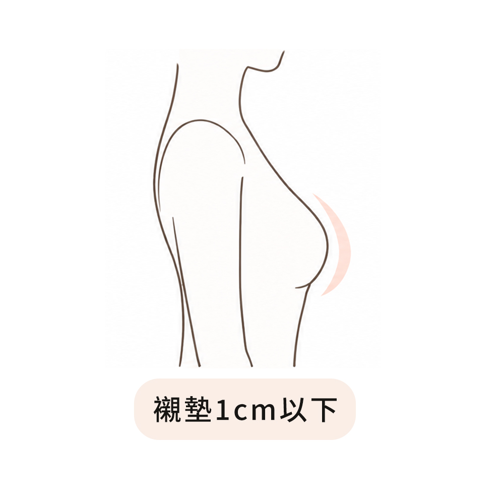

內衣尺寸計算
輸入您的身形數據，跟著步驟選擇胸型與穿著習慣，讓 CHIC CHIC 琪琪幫您找到適合的內衣尺寸。
測量時建議穿著無襯墊內衣，並將數值填寫至小數點第一位，讓尺寸建議更加準確。
Step1 輸入您的胸圍尺寸
上胸圍 Bust Size (cm)
下胸圍 Band Size (cm)
Step2 選擇您的胸型

上胸無肉(軟胸)

上胸有肉(挺胸)
Step3 選擇襯墊厚度

2cm以上

1~2cm

1cm以下
貼心提醒：尺寸計算結果僅供參考，實際穿著感受會因胸型、身形及款式版型而有所不同。若計算結果與平時習慣穿著的尺寸不同，建議優先參考平時穿著尺寸。若對尺寸仍有疑問，歡迎聯繫
CHIC CHIC 琪琪客服：
@chicchic.tw
，我們會協助您確認適合的尺寸
計算我的尺寸
清除重算
×
您的專屬量測結果
--
建議挑選此尺寸試穿。
確認